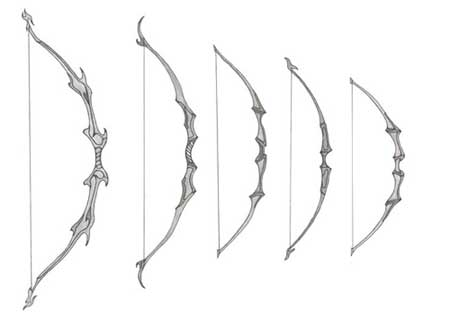
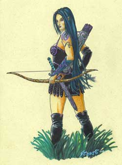
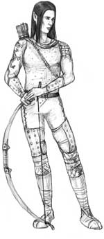
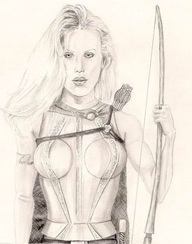
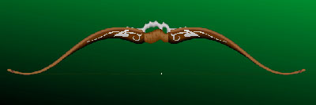
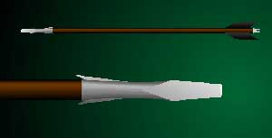

La competenza bowyer/fletcher serve per costruire alcune armi da tiro. Chi spende uno slot in questa competenza deve decidere se saper costruire archi e frecce oppure balestre e dardi (sono quindi necessari due slot per saper costruire entrambi questi tipi di armi da tiro o proiettili).
Il Kit del Mastro Arciere
Per costruire gli archi il mastro arciere necessita di un kit da mastro arciere (con gli attrezzi per lavorare il legno, il pentolino per ammorbidirlo con il vapore, gli strumenti per tendere le corde, ecc...) questo kit portatile pesa 12 lbs., costa 100 g.p. ed ha un manutenzione mensile di 2 g.p. (esiste un kit di ottima qualità che dona al mastro arciere un bonus di +1 esclusivamente nella fabbricazione degli archi e delle frecce, pesa 12 lbs., costa 500 g.p. ed ha una manutenzione mensile pari a 5 g.p.).

Il Legno per gli Archi e le Frecce
Occorre inoltre che il mastro arciere abbia a disposizione un pezzo di legno adeguato a costruire il tipo di arco che vuole fabbricare.
Per reperire questo legno il mastro arciere può recarsi in ogni foresta e cercare il legno adatto, si tratta di una ricerca complessa che impegna un'intera giornata lavorativa al termine della quale il mastro arciere deve superare una prova nella competenza bowyer con una penalità addizionale di -2. Se la prova ha successo è stato recuperato un pezzo di legno idoneo a creare archi. Consultare il seguente schema (tirando 1d100) per verificare che qualità di legno è stata ritrovata (La reperibilità indica la possibilità di trovare ogni mese quei pezzi di legno presso un altro mastro arciere):
01-62 Legno
di Nocciolo
Valore 2,5 g.p., Reperibilità: Nessuna
limitazione, Modifica check: -1, Utilizzabile fino ad archi comuni
Omogeneo legno di colore bianco o bruno chiaro è usato per costruire archi
semplici. E' un legno molto affidabile, ma tende a seguire la corda;
63-82 Legno
di Olmo
Valore 8 g.p., Reperibilità: 1-3 su 1d10,
Modifica check: Nessuna, Utilizzabile fino ad archi buoni
Legno di colore bruno e fibroso è adatto alla e di archi
con flettenti piatti e lunghi.
83-92 Legno
di Frassino
Valore 15 g.p., Reperibilità: 1-2 su
1d10, Modifica check: Nessuna, Utilizzabile fino ad archi eccellenti
Abbastanza resistente alla compressione è un legno eccellente, in particolare
se rinforzato con tendine e pelle grezza. Il durame, bruno scuro, e' la parte
con le migliori proprietà meccaniche.
93-97 Legno
di Tasso
Valore 30 g.p., Reperibilità: 1 su 1d10,
Modifica check: +1, Utilizzabile fino ad archi superbi
Dal legno di tasso si ricavano i migliori archi, è un
legno adatto ad ogni tipo di geometria. Materiale ad accrescimento lentissimo,
la cui parte esterna, l'alburno, è di colore chiaro e ha doti di elasticità,
mentre la parte interna, il durame, è di colore variabile dal bruno al
rossiccio e molto resistente alla compressione.
98-100 Legno
dalle Caratteristiche Speciali
I legni speciali possono donare agli archi caratteristiche speciali uniche.
Questi legni speciali sono commercializzati molto raramente ed è quasi
impossibile acquistarne anche pagando.
1-7 Legno
di Castagno del Tramonto
Valore 50 g.p., Modifica check: +2,
Utilizzabile fino ad archi superbi
L'arco prodotto è di colore rossiccio.
8-14 Legno
di Ebano delle Cave
Valore 50 g.p., Modifica check: +1,
Utilizzabile fino ad archi superbi
L'arco prodotto è di colore nero ed ottiene +1 a tutti i tiri salvezza contro
rottura.
Il valore finale dell'arco prodotto cresce del +10%
15-18 Legno
di Pioppo Bianco
Valore 100 g.p., Modifica check: +1,
Utilizzabile fino ad archi superbi
L'arco prodotto è di colore bianco ed ottiene una gittata superiore: +6 m.
corta, +9 m. media, +12 m. lunga.
Il valore finale dell'arco prodotto cresce del +20%
19-20 Legno
di Quercia Grigia
Valore 125 g.p., Modifica check: +1,
Utilizzabile fino ad archi superbi
L'arco prodotto è di colore grigio ed ottiene un bonus di -1 all'iniziativa
(non quella incoccata).
Il valore finale dell'arco prodotto cresce del +30%
Vi sono poi legni speciali che
possono essere recuperati solo affrontando determinate creature e/o missioni, si
consideri per esempio:
Legno di Wicked Tree (link)
Legno di Trunkman (link)

I Costi di Produzione
Oltre al costo del kit e a quello del legno per costruire il mastro arciere deve comprare materiale comune (reperibile presso qualsiasi centro abitato) per un valore pari al 10% del valore finale dell'arco che desidera costruire. Pagando un costo supplementare pari al 5% del valore finale dell'arco si ottiene un bonus di +1 al check di produzione.
La Qualità degli Archi
Gli archi di una qualità superiore a quella comune possono ottenere dei vantaggi scelti dal costruttore. Un arco buono può avere un solo beneficio, quello eccellente ne può avere due, quello superbo ha tutti i tre benefici. I benefici applicabili agli archi sono i seguenti tre:
Calibratura
ottimale: +1 al tiro per colpire
Gittata Superiore: +6 metri corta,+12 metri
media,+18 metri lunga
Flessibilità Migliorata: -1 all'iniziativa (non
dell'arco incoccato)

Tempi di Produzione e Modificatori al Check
I tempi di produzione e i modificatori alla prova nella competenza variano a seconda del tipo di arco che si desidera costruire, come elencato nella seguente tabella (impiegando 1 giorno supplementare ogni 5 giorni di produzione, arrotondando per eccesso, si ottiene un bonus di +1 alla prova di produzione) :
| Arco Corto Comune | Valore finale: 30 g.p. |
| Modificatore al check: Nessuna | Tempo di Produzione: 5 giorni |
| Arco Corto Buono | Valore finale: 120 g.p. |
| Modificatore al check: - 2 | Tempo di Produzione: 14 giorni |
| Arco Corto Eccellente | Valore finale: 240 g.p. |
| Modificatore al check: - 4 | Tempo di Produzione: 20 giorni |
| Arco Corto Superbo | Valore finale: 450 g.p. |
| Modificatore al check: - 6 | Tempo di Produzione: 29 giorni |
| Arco Corto Composito Comune | Valore finale: 60 g.p. |
| Modificatore al check: - 1 | Tempo di Produzione: 8 giorni |
| Arco Corto Composito Buono | Valore finale: 240 g.p. |
| Modificatore al check: - 3 | Tempo di Produzione: 24 giorni |
| Arco Corto Composito Eccellente | Valore finale: 480 g.p. |
| Modificatore al check: - 5 | Tempo di Produzione: 32 giorni |
| Arco Corto Composito Superbo | Valore finale: 900 g.p. |
| Modificatore al check: - 7 | Tempo di Produzione: 54 giorni |
| Arco Lungo Comune | Valore finale: 75 g.p. |
| Modificatore al check: - 2 | Tempo di Produzione: 8 giorni |
| Arco Lungo Buono | Valore finale: 300 g.p. |
| Modificatore al check: - 4 | Tempo di Produzione: 25 giorni |
| Arco Lungo Eccellente | Valore finale: 600 g.p. |
| Modificatore al check: - 6 | Tempo di Produzione: 35 giorni |
| Arco Lungo Superbo | Valore finale: 1125 g.p. |
| Modificatore al check: - 8 | Tempo di Produzione: 60 giorni |
| Arco Lungo Composito Comune | Valore finale: 100 g.p. |
| Modificatore al check: - 3 | Tempo di Produzione: 9 giorni |
| Arco Lungo Composito Buono | Valore finale: 400 g.p. |
| Modificatore al check: - 5 | Tempo di Produzione: 27 giorni |
| Arco Lungo Composito Ecc. | Valore finale: 800 g.p. |
| Modificatore al check: - 7 | Tempo di Produzione: 41 giorni |
| Arco Lungo Composito Superbo | Valore finale: 1500 g.p. |
| Modificatore al check: - 9 | Tempo di Produzione: 70 giorni |

Archi Tarati sulla Forza
Chi utilizza questi archi può addizionare al danno delle frecce il proprio bonus al danno dovuto alla forza. Creature con forza 16 o superiore dovranno effettuare una prova di forza ogni volta desiderino sparare una freccia con questo arco (se il tiro fallisce tireranno la freccia senza addizionare il loro bonus di forza). Creature con forza inferiore a 16, invece, non sono in grado di tendere (e quindi utilizzare) un arco del genere.
In ogni caso dovranno sempre rispettarsi i limiti di danno per il dado della freccia: una freccia da caccia non potrà fare, senza magia, più di 1d4+6 danni, mentre una freccia da guerra non potrà superare 1d6+8 danni.
| Arco Corto Composito Superbo Tarato | Valore finale: 1800 g.p. |
| Modificatore al check: - 10 | Tempo di Produzione: 75 giorni |
| Arco Lungo Composito Superbo Tarato | Valore finale: 3000 g.p. |
| Modificatore al check: - 12 | Tempo di Produzione: 90 giorni |
The Elven Composite Long Bow

Un costruttori di archi che appartiene ad una qualsiasi razza elfica (ad eccezione degli half-elf) conosce una segreta tecnica millenaria per produrre un arco lungo composito dalle qualità eccezionali che ottiene i seguenti benefici addizionali rispetto a quelli dovuti alla fattura e al materiale.
Resistenza
Straordinaria: +1 ai tiri salvezza contro rottura.
Manovrabilità Eccezionale: Chi lo usa risparmia 1
punto combattimento al round.
Precisione Assoluta: Chi lo usa effettua un critico
anche con un 19 naturale.
Ha le caratteristiche di un Arco Lungo Composito Superbo e può essere anche tarato. Per costruire questo arco deve essere utilizzato unicamente legno dalle caratteristiche speciali.
| Elven Long Bow | Valore finale: 2000 g.p. |
| Modificatore al check: - 10 | Tempo di Produzione: 80 giorni |
| Elven Long Bow Tarato | Valore finale: 4000 g.p. |
| Modificatore al check: - 13 | Tempo di Produzione: 100 giorni |
Costruire Frecce

Un costruttore di archi può in un giorno di ricerca interamente impiegato in foresta per cercare esclusivamente legno adatto alla costruzione di frecce reperire legno sufficiente a produrre un numero di frecce pari a il proprio punteggio di destrezza moltiplicato per 0.35 x 1d10 (con arrotondamento regolare). Il legno necessario a produrre 12 frecce può anche essere acquistato (con facile reperibilità) al costo di 4 s.p..
Per produrre ogni freccia da guerra si consideri necessario l'acquisto di una punta in metallo dal valore di 3 c.p. (per produrre 8 frecce da guerra quindi potrà acquistarsi materiale dal costo complessivo di 0.64 g.p.)
Non è necessario una prova nella competenza per la produzione delle frecce da caccia comuni, mentre è richiesta per quelle di qualità superiore ed in ogni caso per le frecce da guerra. Se la prova fallisce (va ripetuta ogni giorno) sarà stato interamente sprecato il materiale ed il giorno di lavoro. Al termine del periodo di lavoro necessario il costruttore avrà prodotto tutte le frecce volute.
La Qualità delle Frecce
Le frecce di qualità superiore a quella comune possono ottenere dei vantaggi scelti dal costruttore. Una freccia buona può avere un solo beneficio, quella eccellente ne può avere due, quella superba ha tutti i tre benefici. I benefici applicabili agli archi sono i seguenti tre:
Precisione di tiro: +1 al tiro per colpire
Perforazione Superiore: +1 danni
Leggerezza Migliorata: -1 all'iniziativa (non
dell'arco incoccato)
| Freccia da caccia normale | 36 frecce al giorno |
| Freccia da caccia buona | 12 frecce al giorno, prova sulla competenza |
| Freccia da caccia eccellente | 7 frecce al giorno, prova sulla competenza a -1 |
| Freccia da caccia superba | 4 frecce al giorno,prova sulla competenza a -2 |
| Freccia da guerra normale | 24 frecce al giorno,prova sulla competenza |
| Freccia da guerra buona | 5 frecce al giorno, prova sulla competenza a -1 |
| Freccia da guerra eccellente | 3 frecce al giorno, prova sulla competenza a -2 |
| Freccia da guerra superba | 2 frecce al giorno,prova sulla competenza a -3 |